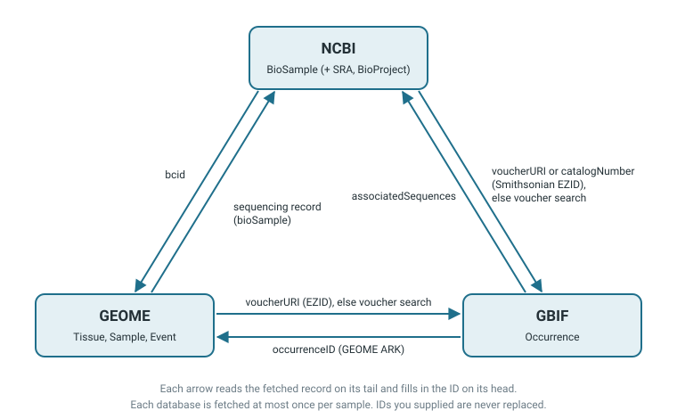
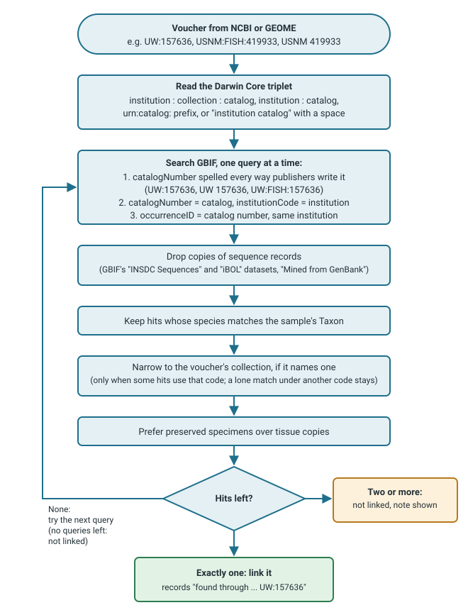

GEOME, GBIF, and NCBI records often point to each other. With linking on, one ID per sample is enough: from a column of SRA accessions, for example, MitoPilot can also find and fetch the matching GEOME and GBIF records. This page builds on Sample metadata.
Turning linking on
Linking is off by default, because it makes extra requests and fills in IDs you did not type. Turn it on for a project at setup, or for one fetch:
new_project(path = "my_project", mapping_fn = "mapping.csv", data_path = "reads/",
link_sources = TRUE)
fetch_ncbi("my_project", link_sources = TRUE) # this fetch onlyIn the app, tick Follow links between databases next to Fetch in the sample metadata viewer.
How MitoPilot links database records

| From | To | Where the link is read |
|---|---|---|
| NCBI BioSample | GEOME | the bcid attribute (samples submitted to the SRA
through GEOME) |
| NCBI BioSample | GBIF | a Smithsonian EZID in voucherURI or
catalogNumber; otherwise a voucher search
|
| GEOME | NCBI | the tissue’s sequencing record, which names its BioSample |
| GEOME | GBIF | a Smithsonian EZID in voucherURI or
catalogNumber; otherwise a voucher search
|
| GBIF | NCBI | a BioSample (or else an SRA run) in
associatedSequences
|
| GBIF | GEOME | a GEOME ARK in occurrenceID,
materialSampleID, or catalogNumber (datasets
GEOME publishes to GBIF) |
Rules that keep linking safe:
- Your IDs always win. MitoPilot only fills a database when the sample has no ID for it. If a record points elsewhere, yours is kept and the viewer notes “… record links to …; kept your ID …”.
- The first link wins. Records are read in the order GEOME, GBIF, NCBI. If two databases link to different records in the third database, the first is linked and the other is noted.
- Each database is fetched at most once per sample, so links cannot loop.
- Every linked ID says where it came from, for example “Found through NCBI BioSample voucherURI” in the viewer.
Sequencing runs can differ. GEOME may name a different SRA run than the one you assembled, for example when a tissue was sequenced twice. MitoPilot links by BioSample, which both runs share.
Matching a voucher to a GBIF record
Only Smithsonian specimens carry an EZID that points straight at a
GBIF record. For other museums, MitoPilot searches GBIF for the specimen
voucher, written as GenBank and museums write it:
institution:collection:catalog
(USNM:FISH:419933), institution:catalog
(UW:157636), either with a urn:catalog:
prefix, or institution catalog (USNM 419933).
It searches in the fields listed in the field
reference, filters the hits, and links only when exactly one
specimen is left:

- The species must match. One catalog number can belong to many specimens.
- The collection code narrows, but does not reject. A single match under another code is kept, since GenBank and GBIF often name collections differently.
- Copies are skipped. GBIF occurrences copied from GenBank or the Barcode of Life are ignored; they are not museum records.
Vouchers without an institution code or specimens the museum has not published to GBIF cannot be matched.
Why is my sample not linked?
- Is linking on? It is off by default; see Turning linking on.
- Did the sample already have an ID for that database? Your IDs are never replaced. Look for “kept your ID” in the viewer.
- Did the voucher match several GBIF specimens? The viewer says “N possible GBIF matches for …; not linked”. Paste the right gbifID.
- Does the record carry a link at all? Open it in the viewer and check the fields in the table above. Many records name no other database.
- Did the linked fetch fail? Hover the faded logo in the Metadata column, or see the fetch messages.